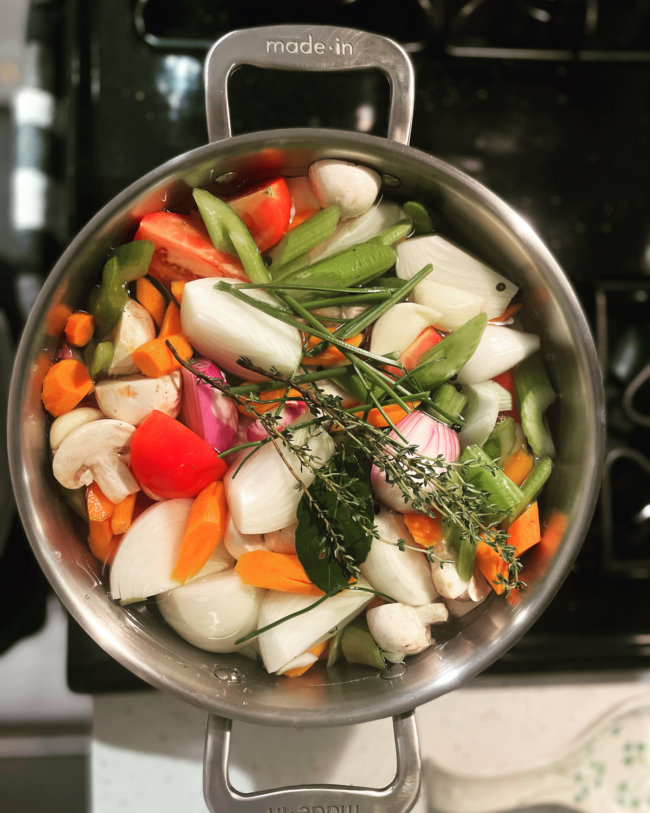

Vegetable Stock

Description
Rich and flavorful homemade vegetable stock made with fresh aromatics, alliums, and herbs. Perfect as a base for soups, stews, and risottos.
Ingredients
- Onions (1 large)
- Shallots (2-3)
- Garlic (1 head)
- Carrots (2-3)
- Celery (2-3)
- Mushrooms (8 oz)
- Roma Tomatoes (4)
- Assorted Herbs (Thyme, Rosemary, Parsley, Bay leaves)
- Salt (Hefty Pinch)
- Black peppercorns (8-10)
Steps
- Cut ingredients into large pieces. Such as quartered or halved, depending on size.
- Add everything to large 8-12 quart stock pot.
- Fill with water until contents are covered. Or until water reaches 2-3 inches below top of pot.
- Bring ingredients to a slow simmer for 45 minutes to 1 hour.
- Strain and divide into one quart containers. Make sure to label with contents name and date.
- Store in refrigerator for 4-5 days or freeze for up to 6 months.
Home